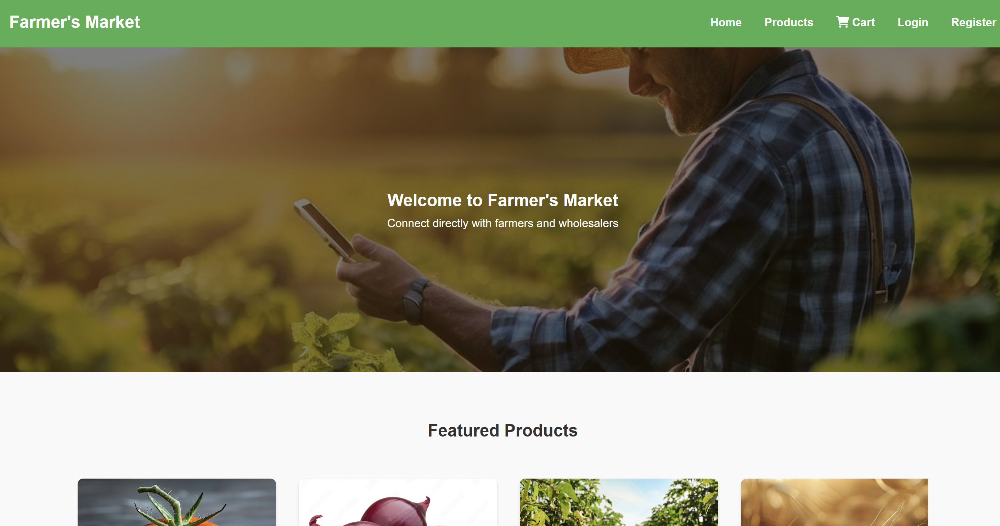

AI / ML
AI / ML
Computer Vision
Tomato Ripeness Detection
AI-based system detecting tomato ripeness using YOLOv8 with shelf-life prediction via time-series analysis.
- YOLOv8 object detection with LAB color analysis for ripeness classification
- Data augmentation (rotation, flipping, brightness) for robust model training
- Time-series analysis to estimate shelf life based on ripeness progression

Full-Stack
Web App
Farmer App
Scalable full-stack marketplace for farmers with JWT auth, product listings, and optimised SQL queries.
- RESTful APIs, CRUD operations, JWT authentication for secure user access
- Optimised SQL queries improving application performance by 30%
- Responsive UI with Tailwind CSS for seamless cross-device experience
 React App
React App
Frontend
Country Information App
React web app integrating REST APIs to display dynamic country data — population, capital, flags, and regions.
- REST API integration for dynamic country information retrieval
- Reusable component-based architecture for maintainability
- Optimised API calls reducing redundant requests